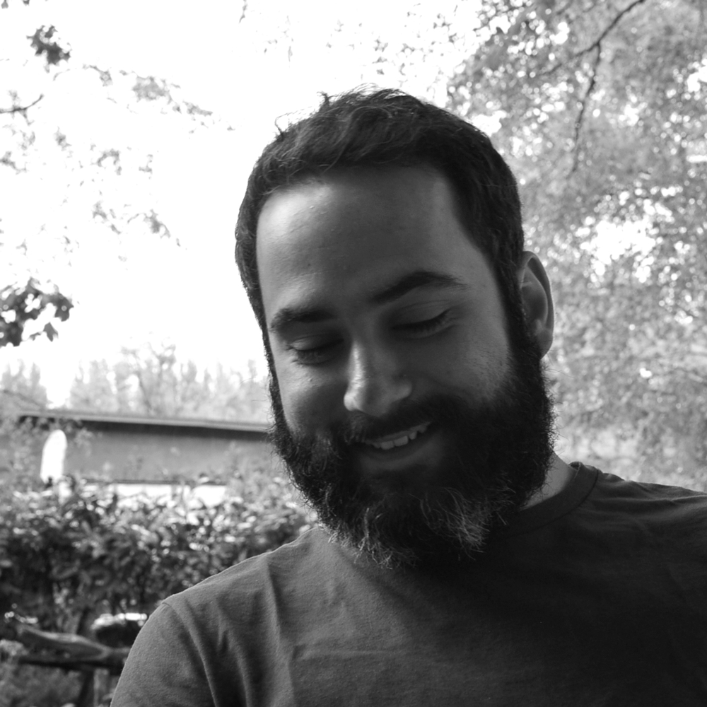

My name is Emanuele Libralato, I am a technologist originary from Italy and I am currently based in Latina Rome Turin Venice London Berlin.
My background is in Software Engineering and I am interested in investigating intersections: between Art, Technology and Design. Between Analog and Digital worlds.
I like to play with technology, I am in love with natural interfaces and I believe in a future without touchscreens.
If you want to have a look at my commercial experiences, you can download my CV here.
Do you want to work with me? I am availble for hire!
Exhibitions:
- Cityboarding - 2013, World Maker Faire, New York
- Pigmento - 2011, Palazzo Spinola Art Gallery, Genoa
- Pigmento - 2011, Telecom Italia Future Centre, Venice
Conferences:
- Service Experience Camp 2014 - Volunteer
- Thingscon 2014 - Volunteer
Speaking:
- "You got an idea. Now what?" barcamp session - Service Experience Camp 2014
